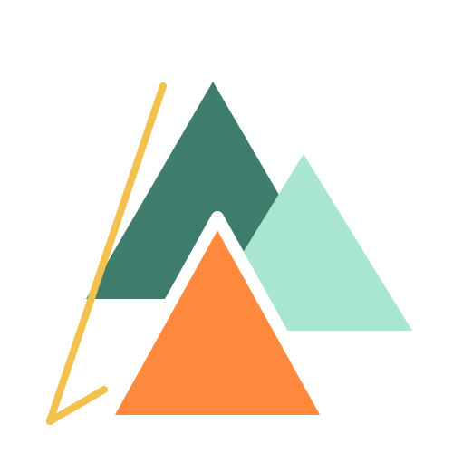

Aire
Mucho margen, poca decoración. El espacio en blanco no se rellena.
Manual de marca personal
Desarrollador en formación. Identidad visual para portafolio, GitHub, CV y proyectos personales.
Reglas de base
Esta marca existe para que mi trabajo se vea reconocible sin tener que gritar. No busca transmitir energía expansiva, sino claridad, orden y una presencia tranquila.
Los cuatro colores no compiten: cada uno tiene un rol. Si una pieza usa los cuatro al mismo peso, está mal hecha.
Mucho margen, poca decoración. El espacio en blanco no se rellena.
Jerarquía clara: título, subtítulo, cuerpo. Nada más.
El acento se usa para señalar, no para decorar.
Los mismos colores y tipografías en todas las piezas.
Superficie principal · calma
Texto de marca · bordes · enlaces
Botones · indicadores · foco
Highlight · etiquetas · cifras
Proporción recomendada
Menta: fondos de sección, cabeceras suaves, tarjetas destacadas.
Neutros: papel cálido y tinta para texto extenso.
Verde té: títulos, enlaces, iconografía, líneas.
Naranja / Amanecer: máximo dos usos por pieza.
Primaria · casual
Para titulares, logo textual y portadas. Trazo redondeado y casual que transmite cercanía sin perder profesionalidad.
Secundaria · Ubuntu
Para cuerpo de texto, documentación y CV. Ubuntu es la fuente oficial de Linux Mint: técnica, legible y con carácter propio.

Regla
Margen mínimo x = altura del triángulo naranja. No pegar texto, iconos ni bordes a menos de esa distancia.
Fin del manual
Cuatro colores, cuatro roles. Si dudas: menos acento, más aire.